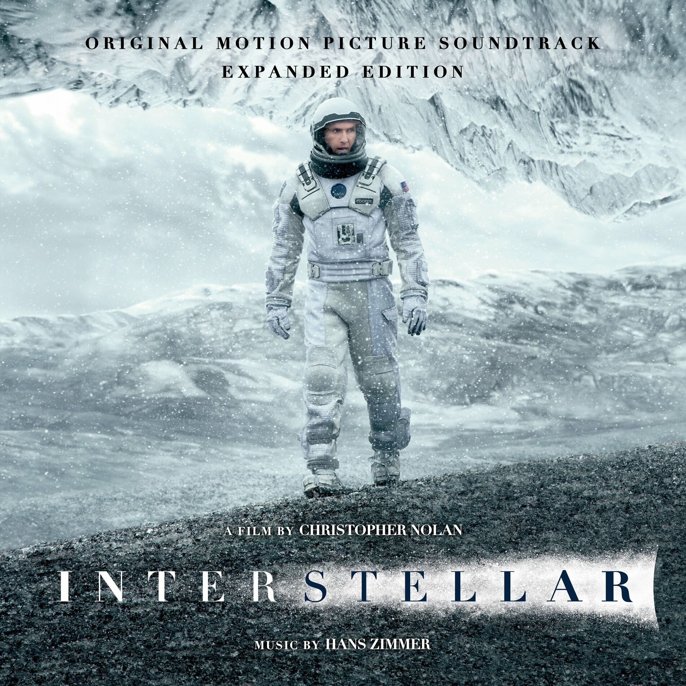
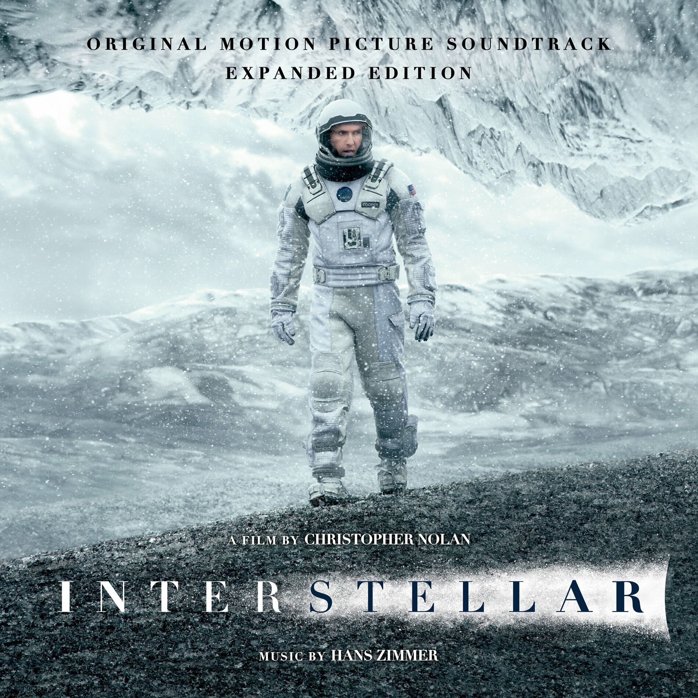

Kiemelt filmem
Interstellar (2014): Egy lenyűgöző sci-fi Christopher Nolan rendezésében, amely az emberiség túlélésének lehetőségeit kutatja a világűr határain túl.
Ezen az oldalon megosztom veled kedvenc filmjeimet és sorozataimat. Böngészd végig az aloldalakat, és fedezd fel, melyek azok a produkciók, amelyek igazán közel állnak a szívemhez!
Interstellar (2014): Egy lenyűgöző sci-fi Christopher Nolan rendezésében, amely az emberiség túlélésének lehetőségeit kutatja a világűr határain túl.
